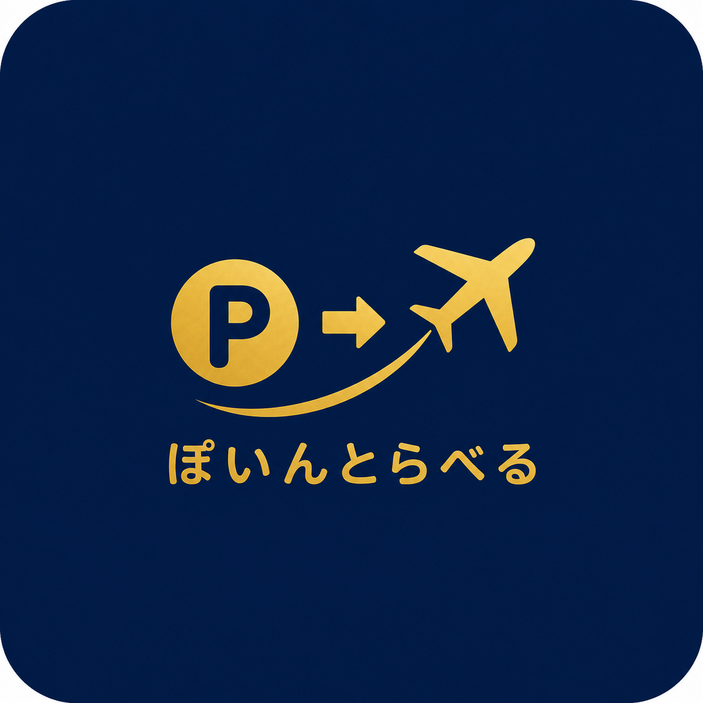

日常生活で無理なくマイルを貯める方法：毎日がポイ活になる！
公開日: 2026年5月8日
1. コンビニ・スーパーでの買い物を工夫する
毎日のように利用するコンビニやスーパーは、マイルを貯める絶好のチャンスです。
たとえば、セブン-イレブンやファミリーマート、ローソンなどのコンビニでは、各社と提携しているクレジットカード（ANAカード、JALカード、三井住友カードなど）を利用することでポイント還元率がアップします。
また、楽天ポイントやdポイント、Tポイント（Vポイント）などを提示し、「ポイントの二重取り」をすることも忘れないようにしましょう。
2. 歩くだけでマイルが貯まるアプリを活用
通勤や通学、お買い物など、日常生活での移動そのものをマイルに変えることができます。
「JAL Wellness & Travel」や「ANA Pocket」などの歩数計・移動距離アプリを活用すれば、普段通り歩いているだけでマイルやポイントが少しずつ貯まっていきます。
健康管理も兼ねて、スマートフォンに入れておくのがおすすめです。
3. 光熱費や通信費など固定費の見直し
毎月必ず発生する固定費（電気代、ガス代、水道代、スマートフォン・インターネット料金など）の支払い方法を、銀行口座引き落としから「マイルが貯まるクレジットカード払い」に変更しましょう。
一度設定してしまえば、あとは毎月自動的にマイルが貯まり続けるため、非常に効率的です。
4. 外食時の「モニター案件」を利用
ポイントサイトが提供している「外食モニター（覆面調査）」も強力です。
対象の飲食店を利用し、簡単なアンケートとレシート画像を提出するだけで、飲食代金の30%〜100%相当のポイントが還元されることがあります。
これらをマイルに交換すれば、飲み会やランチのたびに大量のマイルを獲得できます。
まとめ
日常生活のちょっとした工夫を積み重ねるだけで、気付いた頃には国内旅行や海外旅行に行けるだけのマイルが貯まっています。無理なく続けられる方法から、ぜひ実践してみてください！